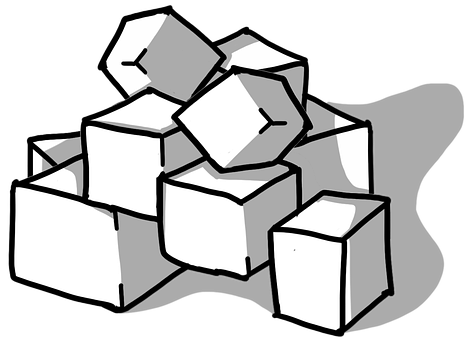
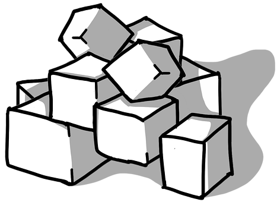
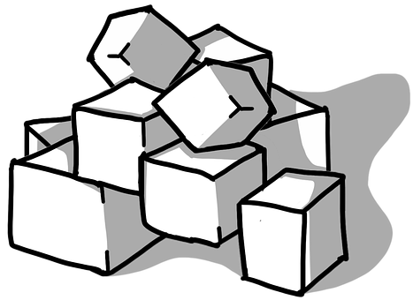

Now lets add two essential ingredient, sugar and milk

Squat down to add them to our chai!
Did you know?
In India, most of the milk produced comes from buffalo; cow milk is a close second, and goat milk a distant third.

 
